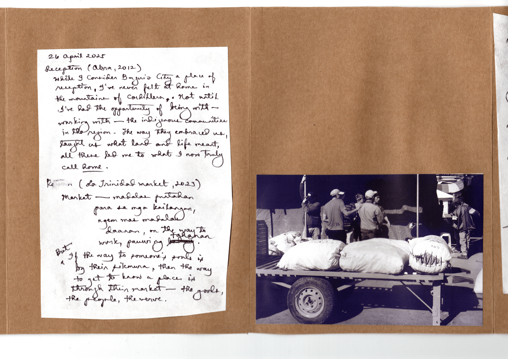

contending with place:
postcolonial writers and the politics of the town
ABSTRACT
This experimental lecture will reflect on the meaning of place and places in our lives,
especially as writers and artists. With dialogue and reflection, we will co-create a collaborative
photo essay on the places that make us, using our own photographs and written responses to creative
prompts. Together we will understand one’s sense of place in terms of community/ies, identity/ies,
and political units that tend to organize our place-based notions.
PROMPTS
Bring one photograph that speaks to home/community, and what this has meant to you. Consider a
place of reception—a sense of space of being held. Bring another photograph that speaks to
an ordinary place you often visit or revisit (e.g. a market, a sacred place, a certain street, etc).
It can be a place that you walk to, a site that you transit or travel or commute, a place you write
about often, or somewhere you loiter and yet overlook. Consider a place of return.
KEYWORDS
community, place, political formation, Philippine poetics
April 26, 2025



“At the point where it was—in a felt and embodied way—a collation of ‘thisplacemeants’ formed by us in dialogue (having written, read, and listened to each other’s stories, insights, reflections, & layered personal and generational histories), I belatedly want to point out this is the kind of invocation of resistance that I believe is not only insurgent in its sociality, interminably plural, but also almost ‘un’grounding: in the sense that you cannot really approximate the depth and expansiveness of all these stories, identities, histories, nor does it qualify under a colonial rubric of ‘place’ that ‘taking a place’ will never fully provide.” (reflections from Carissa Pobre as shared with the group after the lecture-workshop ‘ecocriticism aslant’)